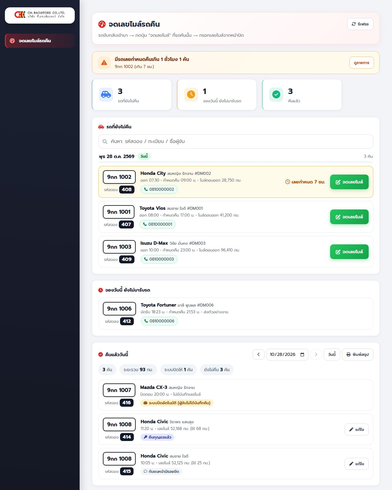
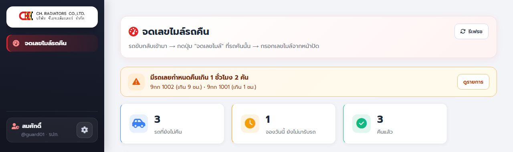
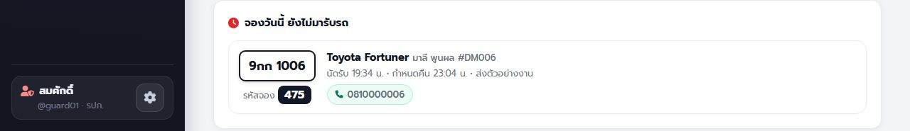
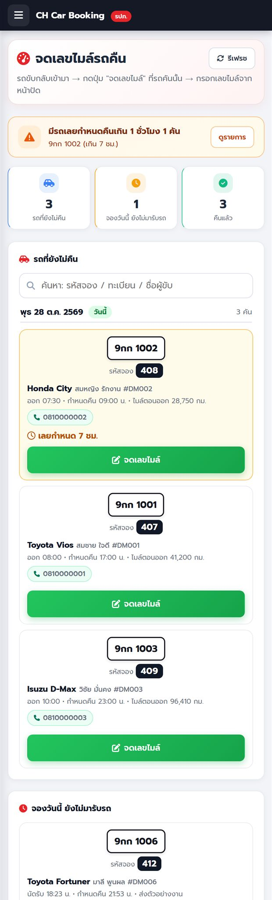
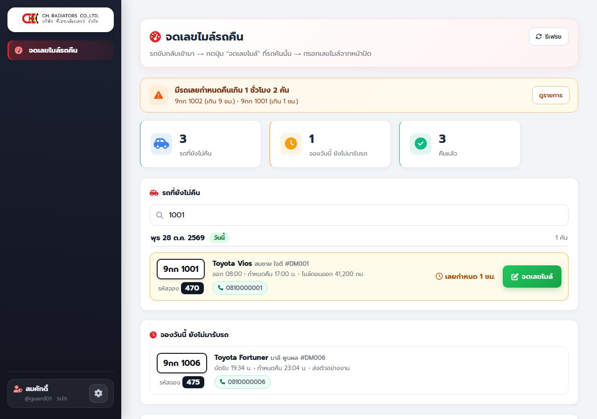
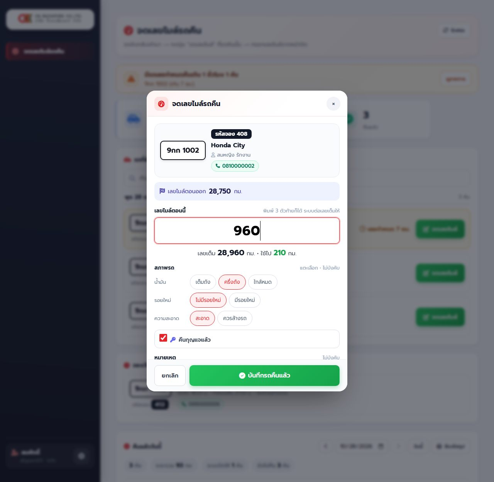
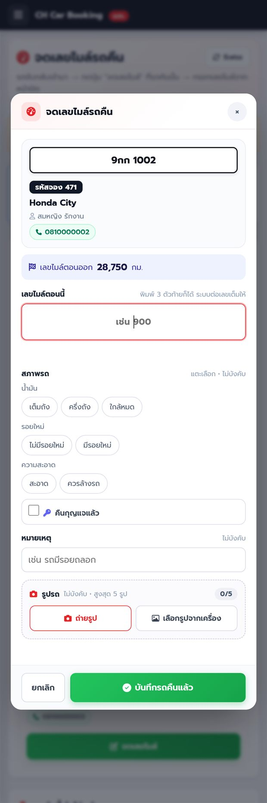
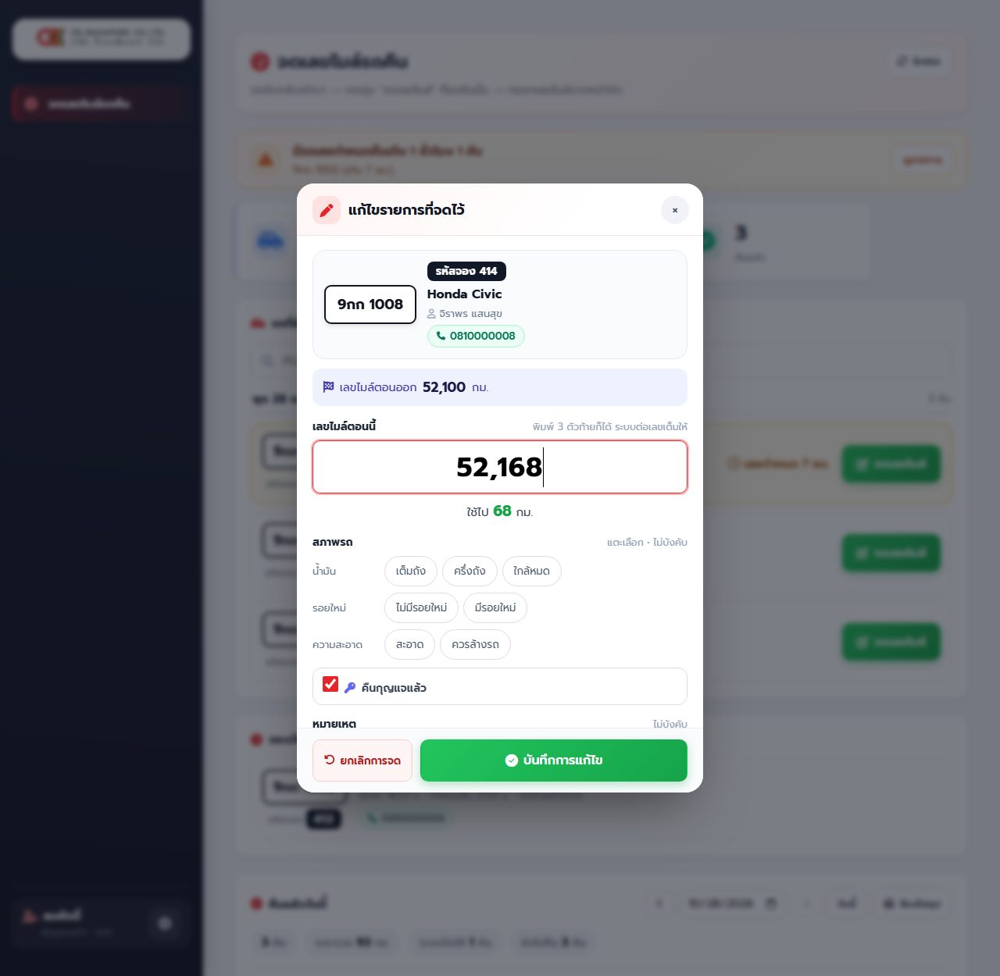

1. ภาพรวมและกติกาของระบบ
ระบบใช้จองรถบริษัท รับรถ คืนรถ และติดตามสถานะรถ ผู้ใช้แบ่งเป็น 3 กลุ่ม แต่ละกลุ่มเห็นเมนูไม่เหมือนกัน
พนักงาน / ผู้ขับ
- จองรถ ดูคิวว่าง
- รับรถ คืนรถ
- ดูประวัติการจองของตัวเอง
เจ้าหน้าที่ รปภ.
- จดเลขไมล์และสภาพรถตอนรถกลับเข้าบริษัท แทนผู้ขับ
- ตามรถที่ยังไม่คืน
แอดมิน
- จัดการรถ การจอง ผู้ใช้
- ตั้งจุดพิกัด ดูรายงานและบันทึกระบบ
- ปิดงานแทนผู้ขับ
วงจรของการจอง
จองแล้ว (รอเช็คอิน)→ขาไป (กำลังใช้งาน)→คืนแล้ว
| สถานะ | ความหมาย | เกิดขึ้นเมื่อ |
|---|---|---|
| จองแล้ว (ป้าย "รอเช็คอิน") | จองคิวไว้แล้ว ยังไม่ถึงเวลาไป | กดยืนยันการจอง |
| ขาไป (ป้าย "กำลังใช้งาน") | รถอยู่กับผู้ขับ | ถึงเวลาไปที่จอง ระบบเช็คอินให้ หรือผู้ขับสแกนรับรถเอง |
| คืนแล้ว | บันทึกการคืนและเลขไมล์แล้ว | ผู้ขับ/รปภ./แอดมินบันทึกคืน |
| ยกเลิก | ยกเลิกก่อนถึงเวลารับรถ | ผู้ขับหรือผู้จองกดยกเลิก หรือแอดมินยกเลิก |
| ยกเลิก (ไม่ได้ใช้รถ) | รถถูกเช็คอินแล้วแต่ไม่ได้ใช้จริง ปล่อยรถคืน | กดปุ่ม "ไม่ได้ใช้รถ" |
| ยกเลิก (ไม่มาใช้งาน) | ผ่านเวลากลับไปแล้วโดยไม่มีใครมารับรถ | ระบบปล่อยคิวเอง |
ป้ายอื่นที่เห็นในหน้าแอดมิน: เลยเวลาคืน (ขาไปและเกินเวลากลับที่จอง) • คืนช้า (คืนแล้วแต่เกินเวลากลับ 60 นาที) • ข้ามคืน (จองให้กลับเช้าวันถัดไป) • ไม่มาใช้งาน
รหัสจอง
รหัสจองคือเลขประจำการจองแต่ละครั้ง แสดงตอนจองสำเร็จ และในหน้า "รายละเอียดการจอง" ผู้ขับบอก รหัสจอง กับ รปภ. ได้เลย (เช่น "รหัส 408") รปภ. ค้นหาแล้วเจอรายการทันที
กติกาที่ระบบบังคับ (ทุกคนควรรู้)
| เรื่อง | กติกา |
|---|---|
| จองล่วงหน้า | ได้ไม่เกิน 90 วัน |
| เวลาไป-กลับ | เวลาไปและเวลากลับ ห้ามเป็นเวลาเดียวกัน ถ้าเวลากลับน้อยกว่าเวลาไป ระบบถือว่า ข้ามคืน (กลับเช้าวันถัดไป) |
| จองซ้อน | รถคันเดียวกันจองช่วงเวลาซ้อนกันไม่ได้ และ ผู้ขับคนเดียวกันก็จองเวลาชนกันไม่ได้ |
| เวลาที่ผ่านมาแล้ว | จองช่วงเวลาที่ผ่านไปแล้วไม่ได้ |
| รถเช็คระยะ/ซ่อม | จองไม่ได้ จนกว่าจะถึงวันที่คาดว่าเสร็จ (วันนั้นเองยังรอแอดมินกดยืนยันว่ารถพร้อม) |
| ผู้ร่วมเดินทาง | ได้ประมาณ 40 คนต่อการจอง |
| เช็คอินรับรถเอง | ทำได้ล่วงหน้าก่อนเวลาไป ไม่เกิน 60 นาที (ถึงเวลาไปแล้วระบบเช็คอินให้เอง) |
| เวลาคืนรถ | ห้ามเป็นเวลาในอนาคต (เกิน 10 นาทีจากปัจจุบัน) และห้ามก่อนเวลารับรถ |
| เลขไมล์ตอนคืน | ต้องมากกว่าเลขไมล์ตอนออกเสมอ (เลขไมล์ไม่ลดลง) ถ้าวิ่งเกิน 1,500 กม. ในทริปเดียว ผู้ขับบันทึกเองไม่ได้ ต้องให้แอดมินบันทึก |
| ใครคืนรถแทนได้ | เฉพาะผู้ขับตัวจริงของรายการ (หรือแอดมิน/รปภ.) |
2. เจ้าหน้าที่ รปภ.
เข้าสู่ระบบด้วยบัญชีของตัวเอง (แอดมินสร้างให้ ไม่ต้องมีอีเมล) ระบบพาไปหน้า จดเลขไมล์รถคืน ทันที เห็นเฉพาะเมนูของ รปภ. ออกจากระบบได้ที่ปุ่มฟันเฟืองมุมซ้ายล่าง ใช้ได้ดีบนมือถือ
หน้าที่ของ รปภ.: ตอนรถกลับเข้าบริษัท จดเลขไมล์ (และสภาพรถ) ให้รายการนั้น แทนผู้ขับ เมื่อบันทึกแล้วรถจะเปลี่ยนเป็น "คืนแล้ว" และให้คนอื่นจองต่อได้ทันที
2.1 อ่านหน้าจอ



| ส่วน | ความหมายและการใช้ |
|---|---|
| ปุ่มรีเฟรช (มุมขวาบนของหัวหน้า) | โหลดข้อมูลล่าสุดทันที (หน้านี้โหลดเองทุก 30 วินาที ถ้ากำลังเปิดหน้าต่างจดอยู่จะไม่โหลดทับ) |
| แถบเตือนสีส้ม | มีรถเลยกำหนดคืนเกิน 1 ชั่วโมง บอกทะเบียนและเวลาที่เกิน กด "ดูรายการ" เพื่อเลื่อนไปที่รถนั้น |
| การ์ดสรุป 3 ใบ | รถยังไม่คืน • จองวันนี้ยังไม่มารับรถ • คืนแล้ว (ของวันที่เลือก) |
| รถที่ยังไม่คืน | รถที่ผู้ขับขับออกไปแล้ว แยกเป็นกลุ่มตามวันที่จอง (วันนี้ / เมื่อวาน / ค้างมา N วัน) แต่ละกลุ่มบอกจำนวนคัน รายการที่เลยกำหนดไฮไลต์สีเหลือง พร้อมป้าย "เลยกำหนด N ชม." มีช่อง ค้นหา ด้วย รหัสจอง / ทะเบียน / ชื่อผู้ขับ |
| จองวันนี้ ยังไม่มารับรถ | ใครมารับรถคันไหนกี่โมง ป้าย "อีก X นาที" หรือ "เลยเวลานัด" ใช้เตรียมกุญแจ/ตามผู้ขับ (ถึงเวลานัด ระบบเช็คอินให้เอง รายการจะย้ายไป "ยังไม่คืน") |
| คืนแล้ว | รายการที่คืนแล้วของวันที่เลือก พร้อมแถบสรุป: จำนวนคัน ระยะรวม กม. ระบบปิดให้กี่คัน ยังไม่คืนกี่คัน |


2.2 จดรถที่กลับเข้ามา (ขั้นตอนหลัก)
- ผู้ขับบอก รหัสจอง หรือทะเบียน พิมพ์ในช่องค้นหา รายการเหลือรายการเดียว (หรือเลื่อนหาในกลุ่ม "วันนี้")
- ตรวจให้ตรง: ทะเบียน ชื่อผู้ขับ ยี่ห้อรุ่น และเลขไมล์ตอนออก
- กดปุ่มเขียว จดเลขไมล์ ที่รายการนั้น หน้าต่างจดเลขไมล์เปิดขึ้น แสดงทะเบียน รหัสจอง ผู้ขับ เบอร์โทร และ เลขไมล์ตอนออก
- พิมพ์ เลขไมล์ตอนนี้ — พิมพ์แค่ 3 หลักท้าย ก็ได้ ระบบต่อเลขเต็มให้ (ดูตัวอย่างด้านล่าง) ใต้ช่องจะขึ้นสรุป เช่น "ใช้ไป 68 กม."
- แตะ ตัวเลือกด่วนสภาพรถ (ไม่บังคับ):
- น้ำมัน: เต็มถัง / ครึ่งถัง / ใกล้หมด
- รอยใหม่: ไม่มีรอยใหม่ / มีรอยใหม่
- ความสะอาด: สะอาด / ควรล้างรถ
- แตะซ้ำที่ปุ่มที่เลือกไว้ = ยกเลิกการเลือก
- ติ๊ก คืนกุญแจแล้ว ถ้าได้รับกุญแจคืน
- ช่อง หมายเหตุ (ไม่บังคับ ไม่เกิน 150 ตัวอักษร) เช่น "กันชนหน้ามีรอยขีด"
- ถ่ายรูปรถ (ไม่บังคับ สูงสุด 5 รูป): กด ถ่ายรูป (เปิดกล้องหลัง) หรือ เลือกรูปจากเครื่อง ระบบย่อรูปในเครื่องและอัปโหลดทันที ตัวนับขึ้น "n/5" กด × ที่มุมรูปเพื่อลบ ถ้ารูปไหนอัปโหลดไม่สำเร็จ แตะที่รูปเพื่อลองใหม่ (ต้องแก้หรือลบรูปที่ไม่สำเร็จก่อนจึงบันทึกได้)
- กด บันทึกรถคืนแล้ว รายการย้ายไปส่วน "คืนแล้ว" และเลขไมล์รถอัปเดต


มีคำบรรยายบนจอ (ไม่มีเสียง) กดเล่น/หยุด หรือกดเต็มจอได้
ระบบต่อเลขเต็มอย่างไร
เลขไมล์ไม่มีวันลด ระบบจึงเลือก "เลขที่น้อยที่สุดที่มากกว่าเลขตอนออกและลงท้ายด้วยเลขที่พิมพ์"
| เลขไมล์ตอนออก | พิมพ์ | ระบบได้ | เหตุผล |
|---|---|---|---|
| 52,100 | 168 (หรือ 68) | 52,168 | ใช้ไป 68 กม. |
| 41,200 | 960 | 41,960 | ใช้ไป 760 กม. |
| 41,200 | 150 | 42,150 | 41,150 น้อยกว่าเลขออก จึงขึ้นเป็นพันถัดไป |
| 41,200 | 41,420 (พิมพ์ 4 หลักขึ้นไป) | 41,420 | ถือเป็นเลขเต็ม ใช้ตามที่พิมพ์ |
ตรวจเลขก่อนกดบันทึกเสมอ
- ระยะที่ได้เกิน 500 กม. ระบบเตือนให้ตรวจเลข (อาจฟังผิดหรือพิมพ์ผิด)
- เกิน 1,500 กม. ต้องกดยืนยันอีกครั้ง
- เลขที่ไม่มากกว่าเลขตอนออก ระบบไม่ให้บันทึก
- ถ้าไม่แน่ใจ ขอให้ผู้ขับอ่านเลขเต็มจากหน้าปัดอีกรอบ ดีกว่าเดา
สถานการณ์ที่พบบ่อย
| สถานการณ์ | ทำอย่างไร |
|---|---|
| ผู้ขับจำรหัสจองไม่ได้ | ค้นหาด้วยทะเบียนหรือชื่อ แทน |
| ค้นหาแล้วไม่เจอรถ | รถอาจไม่ได้อยู่ในสถานะ "ขาไป" (เช่น ผู้ขับคืนเองไปแล้ว หรือระบบปิดให้แล้ว) ดูส่วน "คืนแล้ว" ว่ามีอยู่ไหม ถ้าไม่มีเลย ให้แจ้งแอดมิน |
| รถเข้ามา แต่ยังไม่มีรายการ "ขาไป" (ผู้ขับไม่ได้เช็คอิน) | ดูส่วน "จองวันนี้ ยังไม่มารับรถ" ถ้าเลยเวลานัด ระบบเช็คอินให้เองแล้ว รายการจะขึ้นใน "ยังไม่คืน" |
| ผู้ขับไม่ได้ใช้รถเลย | ให้ผู้ขับกด "ไม่ได้ใช้รถ" ในมือถือ หรือแจ้งแอดมินยกเลิก ไม่ต้องจดเลขไมล์ |
| แถบเตือนเลยกำหนดขึ้น | กด "ดูรายการ" โทรหาผู้ขับด้วยปุ่มเบอร์โทร สอบถามว่ารถอยู่ที่ไหนและกลับกี่โมง |
| ถ่ายรูปไม่ติด | รูปไม่บังคับ บันทึกรายการก่อนได้ แล้วกลับมากด "แก้ไข" เพิ่มรูปภายหลัง (ภายในวันเดียวกัน) |
2.3 โทรตามผู้ขับ
ทุกรายการมีปุ่มเบอร์โทรสีเขียว (เช่น 📞 081-000-0002) กดแล้วโทรออกได้ทันทีบนมือถือ ใช้เมื่อรถเลยกำหนดคืนหรือผู้ขับยังไม่มารับรถ
2.4 จดผิด — แก้ไขหรือยกเลิกการจด
- ในส่วน "คืนแล้ว" หาแถวที่จดผิด กดปุ่ม แก้ไข
- หน้าต่าง "แก้ไขรายการที่จดไว้" เปิดพร้อมค่าที่จดไว้ แก้เลขไมล์ ตัวเลือก หมายเหตุ รูป แล้วกด บันทึกการแก้ไข
- หรือกด ยกเลิกการจด (มุมซ้ายล่าง) เพื่อให้รถกลับเป็น "ยังไม่คืน" เช่น จดผิดคัน จากนั้นจดใหม่ที่คันที่ถูก

มีคำบรรยายบนจอ (ไม่มีเสียง) กดเล่น/หยุด หรือกดเต็มจอได้
| เงื่อนไข | รายละเอียด |
|---|---|
| แก้ไข/ยกเลิกได้เฉพาะ | รายการที่ รปภ. หรือแอดมินจดผ่านหน้านี้ และเป็นของวันนี้ (ปุ่ม "แก้ไข" ขึ้นเฉพาะรายการที่เข้าเงื่อนไข) |
| แก้ไม่ได้ | รายการที่ผู้ขับคืนเอง • ของวันก่อนหน้า — แจ้งแอดมินแก้ที่หน้า "จัดการการจอง" |
| ยกเลิกการจดไม่ได้เมื่อ | รถคันนั้นถูกคนอื่นรับไปใช้แล้ว (มีรายการ "ขาไป" อีกรายการ) |
| การบันทึก | ข้อความหมายเหตุต่อท้ายว่า "[แก้ไขโดย … เวลา …]" และมีบันทึกในระบบทุกครั้ง |
2.5 ดูย้อนหลังและพิมพ์สรุป
- ในหัวข้อ "คืนแล้ว" กดลูกศร ‹ เพื่อดูวันก่อนหน้า หรือกดช่องวันที่เลือกวัน กด วันนี้ เพื่อกลับ (ปุ่ม › ใช้ไม่ได้เมื่ออยู่วันนี้)
- ดูย้อนหลังเป็นการดูอย่างเดียว แก้ไขไม่ได้
- กด พิมพ์สรุป พิมพ์เฉพาะส่วนนี้ มีหัวกระดาษ "สรุปการคืนรถ [วันที่] • คืน N คัน • ระยะรวม … กม. • จัดทำโดย [ชื่อ รปภ.]" เลือกพิมพ์เป็นกระดาษหรือบันทึกเป็น PDF
3. กฎที่ระบบทำให้เองอัตโนมัติ
| เหตุการณ์ | สิ่งที่ระบบทำ |
|---|---|
| ถึงเวลาไปที่จอง | เช็คอินให้เป็น "ขาไป" (เฉพาะรถที่ไม่มีคนใช้ค้างอยู่ และ 1 คันต่อ 1 คิว) บันทึกว่าเป็นการเช็คอินอัตโนมัติ เวลาเช็คอิน = เวลาไปที่จอง |
| เลยเวลากลับโดยไม่มีใครมารับรถเลย (ยังเป็น "จองแล้ว") | ปล่อยคิวเป็น "ยกเลิก (ไม่มาใช้งาน)" และแจ้งผู้ขับ |
| รถ "ขาไป" เลยเวลากลับที่จองไว้ | แจ้งเตือนผู้ขับและแอดมิน ขึ้นป้ายประกาศรถเลยเวลาคืนให้ทุกคนเห็น และขึ้นแถบเตือนที่หน้า รปภ. |
4. แก้ปัญหาที่พบบ่อย และเมื่อไหร่ต้องแจ้งแอดมิน
| ปัญหา | วิธีแก้ |
|---|---|
| บอกเลขไมล์ รปภ. ผิด | รปภ. กด "แก้ไข" ได้ถ้าเป็นรายการวันนี้ ถ้าเลยวันแล้วให้แจ้งแอดมินแก้ที่ "จัดการการจอง" |
| รปภ. จดรถผิดคัน | กด "แก้ไข" แล้ว "ยกเลิกการจด" (วันเดียวกัน) แล้วจดใหม่ที่คันที่ถูก |
| หน้าเว็บยังเป็นแบบเก่าหลังมีการอัปเดต | กด Ctrl + F5 เพื่อล้างไฟล์เก่าของเบราว์เซอร์ (มือถือ: ปิดแท็บแล้วเปิดใหม่) |
เรื่องที่ต้องแจ้งแอดมินเสมอ
- วิ่งเกิน 1,500 กม. ในทริปเดียว (ผู้ขับบันทึกเองไม่ได้)
- แก้ไขรายการที่คืนแล้วของวันก่อน หรือที่ผู้ขับคืนเอง
- รถเสียหายหรือพบรอยใหม่ที่ต้องส่งซ่อม
- ต้องการเพิ่ม/ลบรถ เพิ่มบัญชี รปภ. หรือรีเซ็ตรหัสผ่าน
- รถหาย หรือผู้ขับติดต่อไม่ได้หลังเลยกำหนดคืนนาน
5. เช็กลิสต์ประจำวัน
รปภ. (ต้นเวร)
- เปิดหน้า "จดเลขไมล์รถคืน" กดรีเฟรช
- ดู "รถยังไม่คืน" ที่ค้างมาจากเมื่อวาน โทรตาม
- ดู "จองวันนี้ ยังไม่มารับรถ" เตรียมกุญแจ
รปภ. (ระหว่างเวร / ปลายเวร)
- รถกลับเข้า: ค้นหา → จดเลขไมล์ + สภาพรถ + กุญแจ (+ รูป)
- ก่อนเลิกงาน: เคลียร์แถบเตือน จดรถที่กลับเข้ามาให้ครบ
- ปลายวัน: เปิด "คืนแล้ววันนี้" → พิมพ์สรุปส่งต่อ